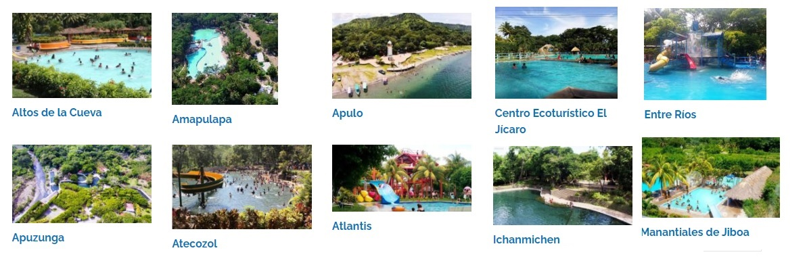

Los parques acuáticos de El Salvador son lugares públicos de carácter gubernamental o privado que sirven como una opción turística para las personas que desean disfrutar de un ambiente relajante cerca de la ciudad sin ir más lejos a las playas, aunque hay algunos que se ubican en la zona costera del país.
La mayoría de los parques acuáticos, también conocidos como turicentros, cuentan con piscinas de diversas clases para que los visitantes puedan refrescarse con sus cálidas aguas, en estas piscinas algunas veces encontrarás toboganes y juegos acuáticos para que chicos y grandes puedan disfrutar de una aventura inolvidable.
- Ichanmichen
El Ichanmichen se trata de un parque acuático salvadoreño que a lo largo de los años ha ido ganando prestigio. Su gran tamaño y su surtido de aguas naturales lo convierten en uno de los turicentros más particulares del país.

Un dato curioso sobre el Ichanmichen
Una característica que también distingue a este parque de los otros son los vestigios culturales que quedan en él. Después de todo, dentro de las instalaciones podrán ver dos esculturas, una de la Siguanaba y otra del Cipitío. Ambos se tratan de figuras comunes de la mitología y el imaginario salvadoreño.